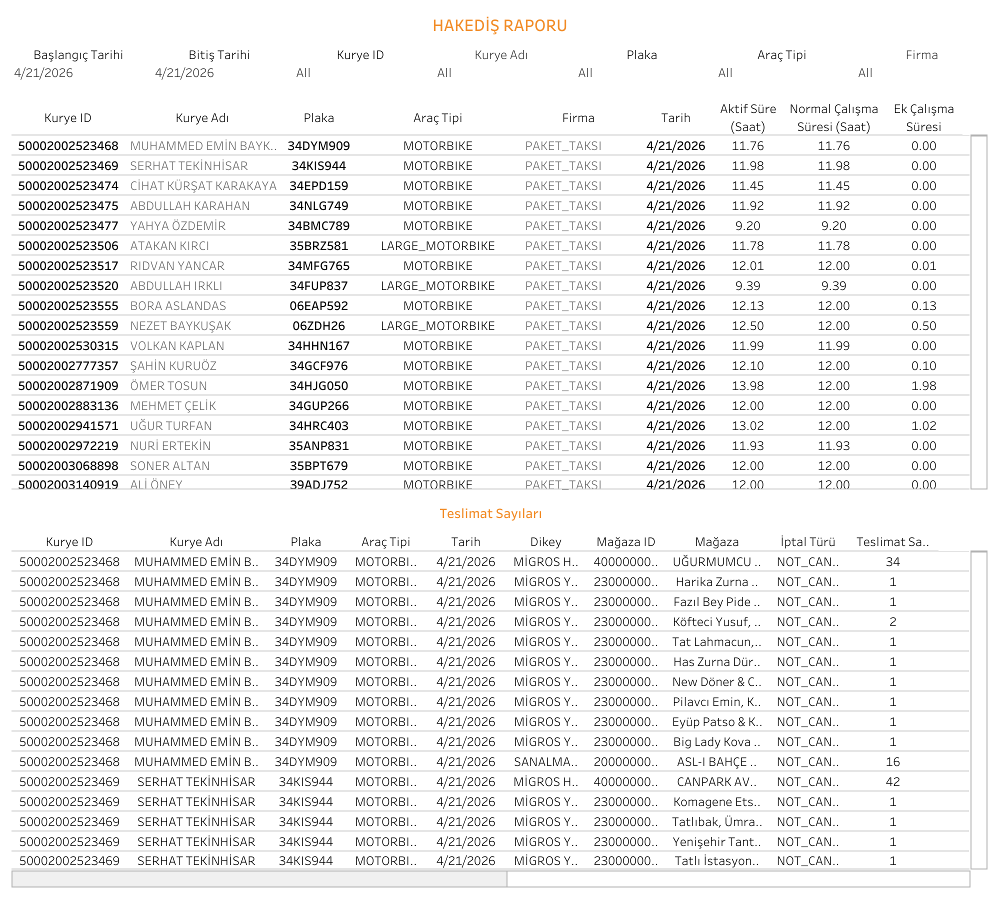

Canlı Rapora Erişin
Güncel hakediş verilerini Tableau üzerinde interaktif olarak görüntüleyin.
Dashboard Hakkında
Ne Gösterir?
Hakediş Raporu, seçilen tarih aralığında her kurye için çalışma sürelerini ve teslimat sayılarını detaylı biçimde listeler. Normal mesai ve ek mesai ayrımı yaparak hakediş hesaplaması için temel veri sağlar.
- Kurye Bilgileri: Kurye ID, adı, plakası, araç tipi ve bağlı olduğu firma
- Çalışma Süreleri: Aktif süre (saat), normal çalışma süresi ve ek çalışma süresi ayrıştırılmış halde
- Teslimat Sayıları: Kurye bazlı mağaza, dikey ve teslimat adedi detayları
- Tarih Filtresi: Başlangıç ve bitiş tarihi seçilebilir; kurye ID, isim, plaka ve araç tipi filtreleri mevcut
- Firma Bazlı Ayrım: PAKET_TAKSİ ve diğer firmalar için ayrı satırlar
Dashboard Önizleme

Hakediş Raporu — Tableau